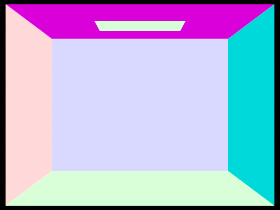
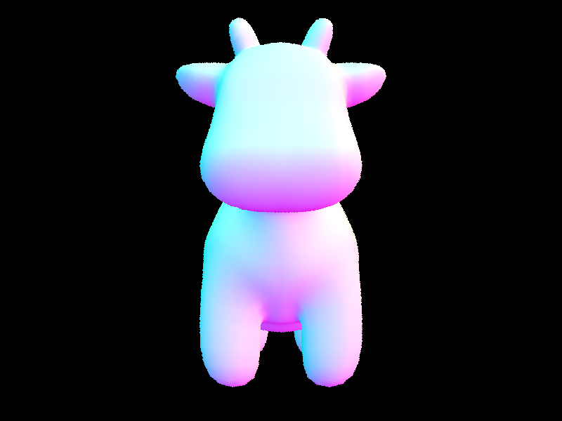
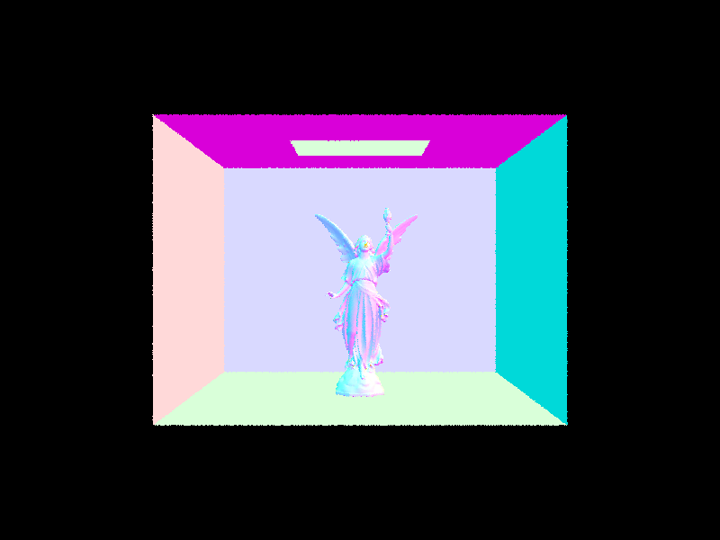
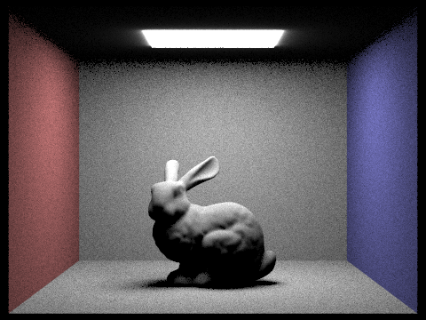
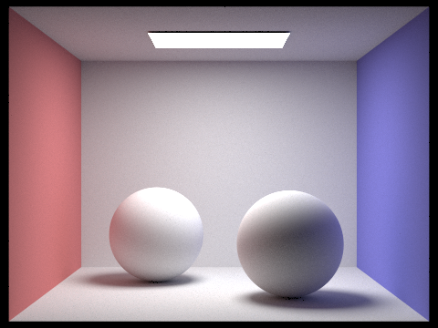
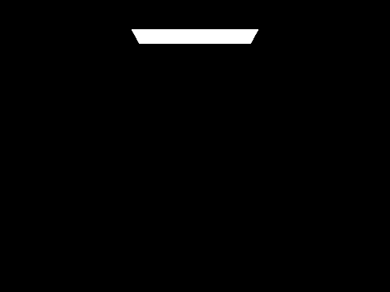

CS 184: Computer Graphics and Imaging, Spring 2023
Project 3-1: Path Tracer
Ziqi Shi, Buyi Geng
Overview
In this project, we will explore five main parts: (1) Basic Ray Tracing, which involves implementing ray generation, primitive intersection, and normal shading; (2) BVH Acceleration, where we construct a Bounding Volume Hierarchy to optimize rendering times; (3) Direct Lighting, focusing on implementing direct lighting functions and comparing noise levels in soft shadows using different sampling techniques; (4) Global Illumination, which includes implementing indirect lighting functions and rendering views with direct and indirect illumination; and (5) Adaptive Sampling, where we develop an adaptive sampling algorithm to optimize rendering by concentrating samples in the more difficult parts of the image.
Part 1: Ray Generation and Scene Intersection (20 Points)
Walk through the ray generation and primitive intersection parts of the rendering pipeline.
The ray generation and primitive intersection parts of the rendering pipeline are two key stages in the process of generating an image from a 3D scene using a raytracer.
At a high level, the ray generation stage involves generating a set of rays that are cast from the camera through the pixels of the image. Each ray represents a straight line from the camera position through a pixel and into the 3D scene. The primitive intersection stage involves computing the intersection of each ray with the primitives in the scene, such as spheres or triangles, in order to determine what objects in the scene are visible from the camera viewpoint.
We fill in the function Camera::generate_ray(...), which takes the normalized image coordinates (x,y) as input and outputs a Ray in the world space and PathTracer::raytrace_pixel(...)
, which takes pixel coordinates(x,y) as input and updates the corresponding pixel.
For the former function, we transform the image coordinates to camera space,generate the ray in the camera space then finally transform it into a ray in the world space, using variables including hFov, vFov, pos, nClip, fClip.
For the latter function, we generate ns_aa random rays using generate_ray(...) implemented in part 1. The integral of radiance over this pixel is estimated by averaging ns_aa samples.
-
Ray Generation:
can be divided into 3 steps:
transform the image coordinates to camera space -> generate the ray in the camera space -> a ray in the world space
The formulas we use for computing position of the input sensor sample coordinate on the canonical sensor plane one unit away from the pinhole is as follows:


Variables used for implementation:
define the sensor: hFov,vFov
camera position in the world place:pos
the camera-to-world rotation matrix:c2w
define the visible edge of the camera:nclip&fclip
-
Scene Intersection:
This function takes in the pixel coordinates (x, y) and updates the corresponding pixel in the sampleBuffer with an estimate of the integral of radiance over this pixel. The estimate is obtained by averaging ns_aa samples.
To estimate the integral of radiance over a pixel, we need to generate ns_aa random rays and trace them through the scene using the est_radiance_global_illumination function. The resulting radiance values are then accumulated and averaged to get the final estimate.
In the loop, we generate a random ray through the pixel using camera->generate_ray and trace it through the scene using est_radiance_global_illumination. The resulting radiance value is accumulated in the variable L_out. After ns_aa samples have been taken, we average the radiance values by dividing L_out by ns_aa. Finally, we update the corresponding pixel in the sampleBuffer with the final estimate using sampleBuffer.update_pixel.
 Test Pixel Sample from cube.dae
Test Pixel Sample from cube.dae
|
 Test Pixel Sample from banana.dae
Test Pixel Sample from banana.dae
|
Explain the triangle intersection algorithm you implemented in your own words.
The Möller–Trumbore intersection algorithm we implemented is a method for efficiently testing if a ray intersects with a triangle in 3D space.
The ray is defined by an origin point O and a direction vector v. Every point on the ray can be expressed by \begin{aligned}t=O+tv\end{aligned}, where the parameter t ranges from zero to infinity. The triangle is defined by three vertices.
Using barycentric coordinates, any point on the triangle can be expressed as a convex combination of the triangle's verticies: P=wv1+uv2+vv3
The coefficients must be non-negative and sum to 1, so w can be replaced with 1-u-v:
\begin{aligned}P&=(1-u-v)v_{1}+uv_{2}+vv_{3}\\P&=v_{1}+u(v_{2}-v_{1})+v(v_{3}-v_{1})\end{aligned}
, where P is any point on the plane.
To find u and v for a particular intersection, set the ray expression equal to the plane expression, and put the variables on one side and the constants on the other.
\begin{aligned}O+tD&=v_{1}+u(v_{2}-v_{1})+v(v_{3}-v_{1})\\O-v_{1}&=-tD+u(v_{2}-v_{1})+v(v_{3}-v_{1})\end{aligned}
This is a system of linear equations with three equations (one each for x, y, z) and three unknowns (t, u, v), and can be represented as a matrix-vector multiplication.

To perform the intersection test, the algorithm first computes the edge vectors of the triangle and the vector from the ray origin to one of the triangle's vertices. Then it computes the normal vector of the triangle as the cross product of two of its edge vectors.Next, the algorithm calculates the determinant of the matrix formed by the ray direction and the edge vectors of the triangle. If this determinant is close to zero, then the ray and the triangle are parallel and there is no intersection. If the determinant is non-zero, the algorithm continues by calculating the inverse of the determinant and using it to compute the parameters of the barycentric coordinate system of the intersection point.Finally, the algorithm checks whether the barycentric coordinates of the intersection point are within the range of [0,1], indicating that the intersection point lies within the triangle. If so, the algorithm returns the distance of the intersection point along the ray direction as well as the barycentric coordinates of the intersection point.Overall, the Möller–Trumbore algorithm is a simple and efficient method for testing ray-triangle intersections, making it a popular choice for use in real-time rendering applications.
Show images with normal shading for a few small .dae files.
|

Normal Shading from CBempty.dae
|
Normal Shading from CBspheres_lambertian.dae
|
Part 2: Bounding Volume Hierarchy (20 Points)
Walk through your BVH construction algorithm. Explain the heuristic you chose for picking the splitting point.
The Bounding Volume Hierarchy (BVH) construction algorithm is a recursive process that aims to create an efficient binary tree structure to speed up the rendering process, which can be devided into six steps:
-
Compute the bounding box of a list of primitives and initialize a new BVHNode with that bounding box.
-
Check the number of primitives in the list against the max_leaf_size
-
Pick the axis-aligned splitting plane that divides the primitives into the next two branches. We used the heuristics described at the end of lecture 9 (slide 89). In this operation, we perform heuristics for all possible splitting planes along all three axis. The candidate splitting planes are generated by (extent of primitives/n) intervals, where n is the number of splitting planes for a single axis. We arbitrarily chose n=16, which worked decently well. For each axis/splitting plane combination, we used a cost function \begin{aligned}Cost=SA(Left) * TriCount(Left) + SA(Right) * TriCount(Right)\end{aligned} to calculate the potential splitting cost, and updated the optimal combination dynamically. We also skipped over any splits that result in partitions of size 0, as it would result in permanent loop.
-
Performed the real split on the primitives. The primitives whose bounding box centroids are less than or equal to the split point go to the left collection, and those greater than the split point go to the right collection.
-
Recursively call the BVH construction algorithm on both the left and right collections, and set the current node's left and right children with the resulting BVHNodes.
By using this algorithm and heuristic, the BVH construction process creates an efficient tree structure that allows the path tracer to quickly discard collections of primitives that a particular ray is guaranteed not to intersect. This significantly improves rendering times for complex geometries.
Show images with normal shading for a few large .dae files that you can only render with BVH acceleration.
|

|

|
|
|

|
These images demonstrate the ability of the path tracer with BVH acceleration to efficiently render highly complex scenes with a large number of triangles. The implementation of BVH significantly reduces rendering times, enabling the rendering of intricate models that would otherwise take an impractical amount of time without BVH acceleration.
Compare rendering times on a few scenes with moderately complex geometries with and without BVH acceleration. Present your results in a one-paragraph analysis.
The implementation of the Bounding Volume Hierarchy (BVH) significantly improves the rendering times for scenes with moderately complex geometries. Comparing the rendering times before and after implementing the BVH, we can observe a substantial decrease in time.This improvement is primarily due to the reduction of ray intersection complexity from O(n) to O(log(n)) using BVH, allowing the path tracer to render scenes with higher complexity more efficiently. The optimized tree structure created by the BVH construction algorithm enables the path tracer to quickly discard collections of primitives that a particular ray is guaranteed not to intersect, which translates into faster rendering times for moderately complex geometries.
Part 3: Direct Illumination (20 Points)
Walk through both implementations of the direct lighting function.
-
Direct Lighting with Uniform Hemisphere Sampling (Task 3):
The function, estimate_direct_lighting_hemisphere(intersection, scene, num_samples), aims to estimate the direct lighting on a point by sampling uniformly in a hemisphere around that point.
a. Initialize a variable to accumulate the sum of lighting contributions from all the samples.
b. Loop through the number of samples (num_samples) specified.
c. For each sample, use the UniformHemisphereSampler3D to generate a random direction vector in the object-space hemisphere around the intersection's normal.
d. Convert the direction vector to world-space coordinates using the intersection's shading basis.
e. Create a new ray with the intersection point as the origin and the world-space direction vector as the direction.
f. Cast the ray through the scene to see if it intersects with a light source.
g. If the ray intersects a light source, calculate the lighting contribution by multiplying the BRDF value, the light's radiance, and the cosine of the angle between the light direction and the surface normal. Accumulate this value in the variable initialized in step a.
h. After the loop, divide the accumulated lighting value by the number of samples to get the average lighting contribution. This is the final direct lighting estimate.
-
Direct Lighting by Importance Sampling Lights (Task 4):
The function, estimate_direct_lighting_importance(intersection, scene, num_samples), estimates the direct lighting on a point by sampling light sources in the scene based on their importance.
a. Initialize a variable to accumulate the sum of lighting contributions from all the samples.
b. Loop through the number of samples (num_samples) specified.
c. For each sample, choose a random light source from the scene, considering the light's power as its importance weight.
d. Use the sample() function of the chosen light to get a sampled point on the light source, the light's radiance at the sampled point, and the probability density function (PDF) value.
e. Calculate the direction vector from the intersection point to the sampled point on the light source.
f. Create a new ray with the intersection point as the origin and the direction vector as the direction.
g. Cast the ray through the scene to see if it intersects with the chosen light source.
h. If the ray intersects the chosen light source, calculate the lighting contribution by multiplying the BRDF value, the light's radiance, and the cosine of the angle between the light direction and the surface normal. Then divide this value by the PDF value. Accumulate this value in the variable initialized in step a.
i. After the loop, divide the accumulated lighting value by the number of samples to get the average lighting contribution. This is the final direct lighting estimate.
These two methods provide different trade-offs. Uniform hemisphere sampling can produce more noise due to sampling directions that do not contribute to the lighting. Importance sampling, on the other hand, focuses on sampling the light sources directly, which can provide better convergence and less noise.
Show some images rendered with both implementations of the direct lighting function.
|
Uniform Hemisphere Sampling
|
Light Sampling
|
|

CBbunny.dae
|
CBbunny.dae
|
 dragon.dae
dragon.dae
|
dragon.dae
|
Focus on one particular scene with at least one area light and compare the noise levels in soft shadows when rendering with 1, 4, 16, and 64 light rays (the -l flag) and with 1 sample per pixel (the -s flag) using light sampling, not uniform hemisphere sampling.
|
1 Light Ray (CBbunny.dae)
|
4 Light Rays (CBbunny.dae)
|
|
16 Light Rays (CBbunny.dae)
|
64 Light Rays (CBbunny.dae)
|
With 1 light ray (-l 1), the rendered image exhibits a high level of noise in the soft shadows, making the scene appear grainy and less visually appealing.
As we increase the number of light rays to 4 (-l 4), the noise level in the soft shadows is reduced, but still noticeable. The overall quality of the image is improved compared to the 1 light ray case, but it still lacks smoothness.
When rendered with 16 light rays (-l 16), the noise level in the soft shadows is further reduced, resulting in a more visually appealing image. The shadows appear smoother, and the overall lighting in the scene is more accurate and consistent.
Finally, with 64 light rays (-l 64), the noise level in the soft shadows is significantly minimized. The rendered image has smooth and realistic shadows, offering the best visual quality among the compared cases.
In summary, as the number of light rays increases, the noise levels in the soft shadows decrease, resulting in smoother and more accurate shadows. It's essential to find the right balance between the number of light rays and rendering time, as increasing the number of light rays can also lead to longer rendering times.
Compare the results between uniform hemisphere sampling and lighting sampling in a one-paragraph analysis.
When comparing uniform hemisphere sampling and light sampling, we can observe significant differences in the noise levels and rendering efficiency. Uniform hemisphere sampling tends to produce noisier images with more visible artifacts in the shadows, as it samples the entire hemisphere uniformly without considering the actual light source positions. As a result, many of the samples may not contribute to the illumination of the point being shaded, leading to increased noise and less accurate shadow representation. On the other hand, light sampling directly targets the light sources, which results in a more efficient use of samples and reduced noise levels. This approach yields smoother shadows, fewer artifacts, and a more realistic appearance overall. Although light sampling can sometimes require more computation than uniform hemisphere sampling, the trade-off is generally worth it, as the improved image quality is essential for achieving realistic renderings.
Part 4: Global Illumination (20 Points)
Walk through your implementation of the indirect lighting function.
-
First, we implement the at_least_one_bounce_radiance function, which handles both direct and indirect lighting. It starts by calling the one_bounce_radiance function for direct lighting and stores its result in the direct_light variable.
-
Next, we sample a random direction based on the BSDF at the hit point using the sample_f function provided by the BSDF class. This function takes the outgoing radiance direction and returns a sampled incoming direction along with its probability density function (PDF) value.
-
We then trace a new ray in the sampled direction, adding a small epsilon (EPS_F) to the origin to avoid self-intersection issues. The new ray's depth should be one less than the current ray's depth to account for the additional bounce.
-
The at_least_one_bounce_radiance function is recursively called with the new ray and intersection information to estimate the radiance contributed by higher bounces.
-
We calculate the indirect lighting contribution by multiplying the BSDF value, the indirect radiance, and the cosine factor, then dividing by the PDF value. This result is stored in the indirect_light variable.
-
To prevent infinite recursion, we implement Russian Roulette for random termination. We generate a random number and compare it to the termination probability. If the random number is less than the termination probability, we terminate the recursion and return only the direct lighting contribution.
-
Finally, we incorporate the at_least_one_bounce_radiance function into the est_radiance_global_illumination function, which estimates the total radiance with global illumination arriving at a point from a particular direction.
With this implementation, our path tracer is capable of handling indirect lighting and rendering images with global illumination. This adds a level of visual richness to the rendered scenes, as it accounts for complex lighting interactions such as color bleeding in Lambertian scenes.
Show some images rendered with global (direct and indirect) illumination. Use 1024 samples per pixel.
|
CBbunny.dae
|

CBspheres_lambertian.dae
|
Pick one scene and compare rendered views first with only direct illumination, then only indirect illumination. Use 1024 samples per pixel. (You will have to edit PathTracer::at_least_one_bounce_radiance(...) in your code to generate these views.)
|
Only direct illumination (CBspheres_lambertian.dae)
|
Only indirect illumination (CBspheres_lambertian.dae)
|
The direct illumination image shows the immediate lighting from light sources, while the indirect illumination image shows the light that has bounced off surfaces in the scene.
For CBbunny.dae, compare rendered views with max_ray_depth set to 0, 1, 2, 3, and 100 (the -m flag). Use 1024 samples per pixel.
|

max_ray_depth = 0 (CBbunny.dae)
|
max_ray_depth = 1 (CBbunny.dae)
|
|
max_ray_depth = 2 (CBbunny.dae)
|
max_ray_depth = 3 (CBbunny.dae)
|
|
max_ray_depth = 100 (CBbunny.dae)
|
Increasing the max_ray_depth enhances the global illumination and overall realism of the rendered image. However, there is a diminishing return on image quality after a certain depth, as the energy of light rays diminishes with each bounce. Therefore, it's essential to find a balance between max_ray_depth and computational resources to achieve the desired level of realism while maintaining reasonable rendering times.
Pick one scene and compare rendered views with various sample-per-pixel rates, including at least 1, 2, 4, 8, 16, 64, and 1024. Use 4 light rays.
|
1 sample per pixel (example1.dae)
|
2 samples per pixel (example1.dae)
|
|
4 samples per pixel (example1.dae)
|
8 samples per pixel (example1.dae)
|
|
16 samples per pixel (example1.dae)
|
64 samples per pixel (example1.dae)
|
|
1024 samples per pixel (example1.dae)
|
In conclusion, increasing the samples per pixel improves the image quality by reducing noise and capturing a more accurate representation of the scene. However, higher SPP values come at the cost of increased computational time. It's essential to find a balance between the desired visual quality and the available computational resources.
Part 5: Adaptive Sampling (20 Points)
Explain adaptive sampling. Walk through your implementation of the adaptive sampling.
Adaptive sampling is a technique used in Monte Carlo path tracing to efficiently distribute the samples in an image by focusing more on the regions that require a higher number of samples to converge while spending less time on regions that converge faster with fewer samples. This approach helps reduce noise in the rendered image without uniformly increasing the number of samples per pixel, which can save significant computation time.
In the PathTracer::raytrace_pixel() function in src/pathtracer/pathtracer.cpp, keep track of the sum of the illuminance (s_1) and the sum of the squared illuminance (s_2) for each pixel as you process samples.
For every samplesPerBatch samples, calculate the mean (μ) and variance (σ^2) of the samples using the running sums s_1 and s_2. Compute the standard deviation (σ) and the convergence measure I using the formula mentioned above.
Check the convergence condition. If the pixel has converged, stop sampling rays for that pixel. Otherwise, continue sampling until you reach the maximum number of samples (ns_aa).
Update the sampleCountBuffer with the actual number of samples per pixel to visualize the output sampling rate image.
Pick two scenes and render them with at least 2048 samples per pixel. Show a good sampling rate image with clearly visible differences in sampling rate over various regions and pixels. Include both your sample rate image, which shows your how your adaptive sampling changes depending on which part of the image you are rendering, and your noise-free rendered result. Use 1 sample per light and at least 5 for max ray depth.
|
Rendered image (bunny.dae)
|
Sample rate image (bunny.dae)
|
|
Rendered image (dragon.dae)
|
Sample rate image (dragon.dae)
|
In this comparison, we have selected two scenes to render with adaptive sampling, using at least 2048 samples per pixel (SPP). We will use 1 sample per light and a max ray depth of at least 5. The goal is to demonstrate the differences in sampling rate over various regions and pixels while providing a noise-free rendered result.
In conclusion, adaptive sampling allows for an efficient allocation of computational resources, focusing on the more challenging parts of a scene. The resulting images are noise-free and showcase accurate lighting, shading, and fine details, providing a visually appealing and realistic representation of the scenes.